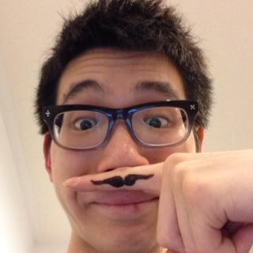

Home
Restaurants
Dev blogs
About me

#foodie #food_enthuisastic #programmer #full stack developer #love gadgets
【Name】 Masaru Ueno (pen name from elementary school days)
【Lifetime so far】 August 1962 Born in Kurume City,
Fukuoka Prefecture. I spent four years as a student in Kyoto, and I went to Fukuoka city with my job. The number
of visits to eating and drinking establishments for one year is 1,000 or more in total including meals and tea
ceremonies. An encounter with "food" is an encounter with "people".